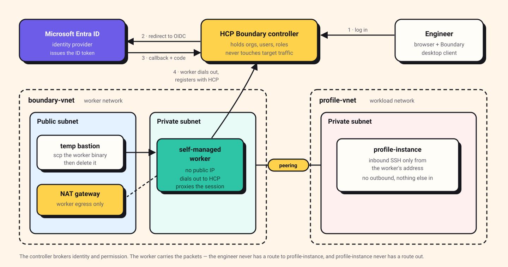
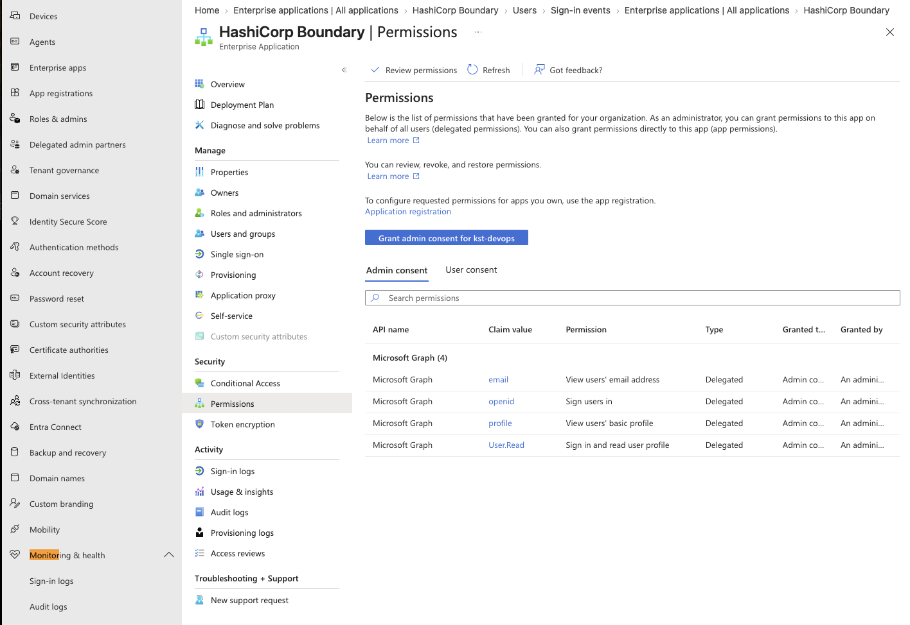
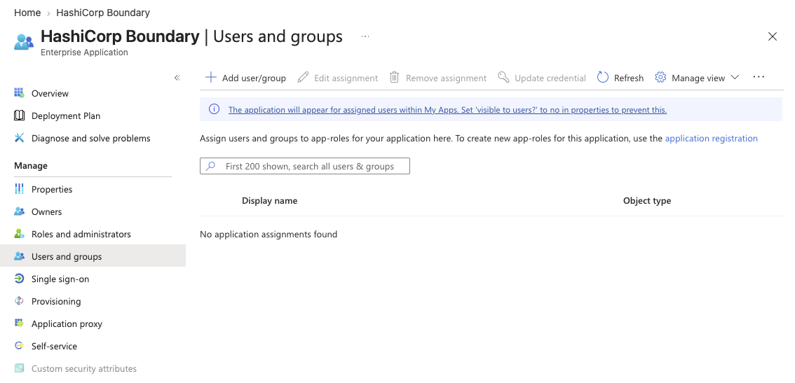
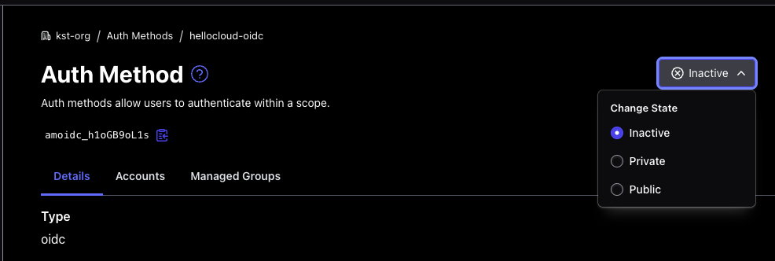
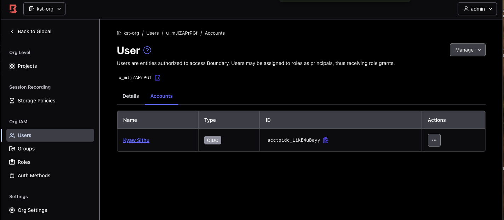
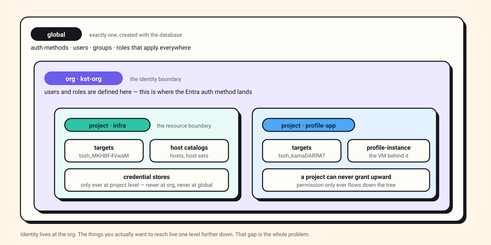
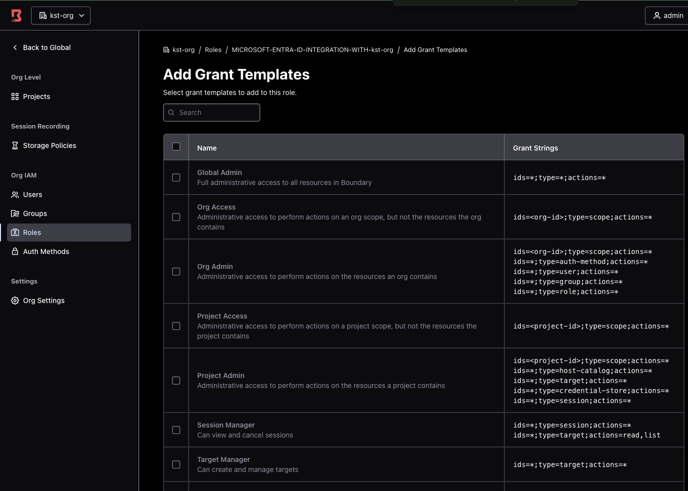
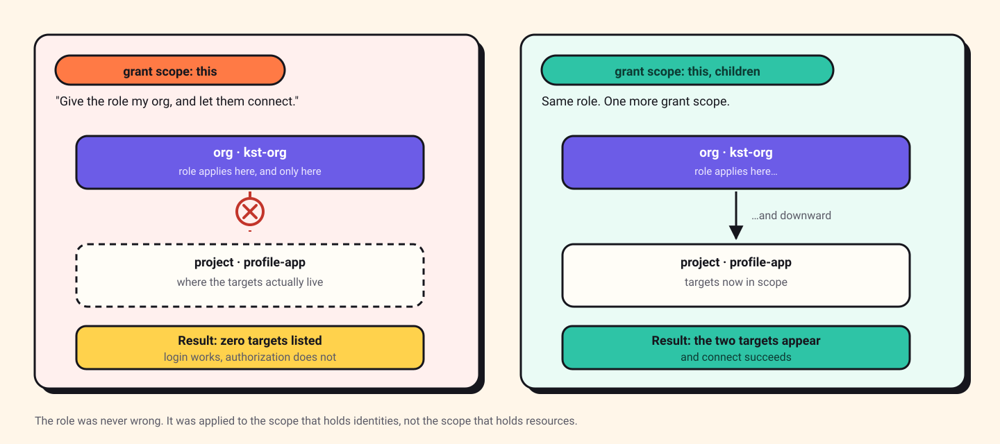
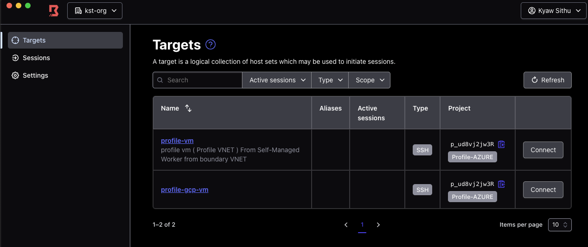
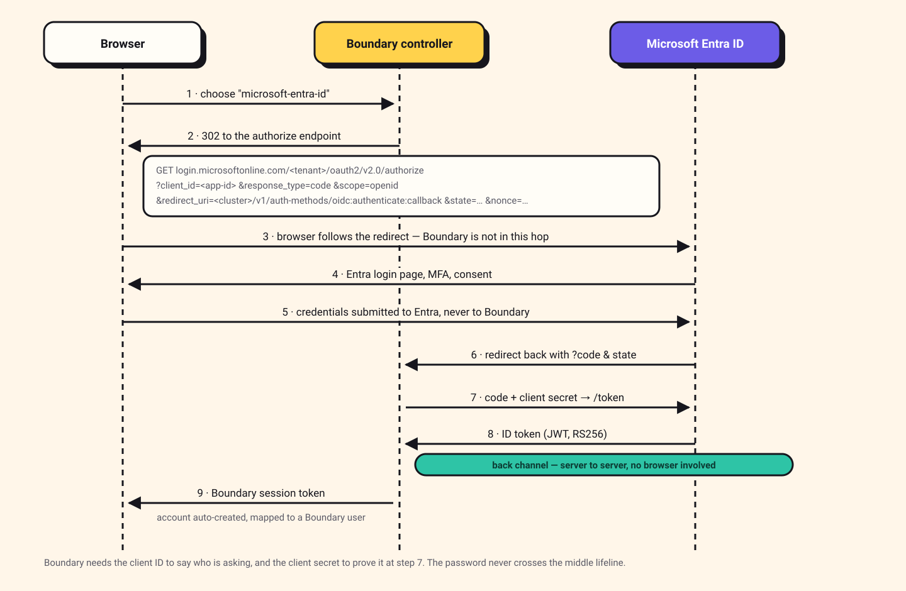

Boundary and Microsoft Entra ID: single sign-on was the easy half
I wired HashiCorp Boundary to Entra ID so engineers could reach a private VM with their corporate login and no SSH key anywhere. Authentication worked the same afternoon. Then I logged in successfully and could see absolutely nothing — and that is the part worth writing down.

Read it, then build it 🛠️
This page is written to be followed along with, not just read. Open the Excalidraw board beside it and work through the steps yourself — every screen I filled in is captured there, in the order I filled it in.
Reading gives you the shape of the thing. Only doing it gives you the understanding. I did not learn any of this by reading, and I do not think anyone does.
The whole build, on one board. All of this started life on an Excalidraw canvas — the topology, every portal screenshot, the errors in the order I actually hit them, the scope diagrams and the log analysis. The post is the tidied version; the board is the working one, with the dead ends left in.
The environment is decommissioned — cluster, workers, VMs and
the Entra application with its client secret are all gone, so nothing on the
board points at anything that still exists. I have used
<angle-bracket> placeholders in the text anyway, out of habit.
Resource IDs like u_mJjZAPrPGf are kept as they were, because
recognising the shape of an ID in a log line is half of what this post is about.
Contents
The problem this solves
It is worth being precise about what was wrong before, because "we set up SSO" is not a reason to do anything. The reason is that the normal way of giving engineers SSH access to private machines has two failure modes, and both are the kind that stay invisible until the day they matter.
1 · The key outlives the person
The default pattern is a keypair on a laptop and a public key in
authorized_keys on the target. That key is a
bearer credential: whoever holds the file is the user. It does
not expire, it does not know who is holding it, and removing it means finding
every host it was ever copied to.
So offboarding becomes a search problem. Someone leaves, their account is disabled in the directory within minutes, and their SSH key still works, because nothing about the SSH path ever consults the directory. The gap between "disabled in Entra" and "can no longer reach production" is however long it takes a human to remember every machine.
2 · Nobody can answer who connected to what
Ask who opened a shell on a given host last Tuesday and, with keys, the honest
answer is a grep through auth.log on machines that may have been
replaced since. There is no central record, because there was never a central decision. Each host decided for itself, based on a file.
| Question | SSH keys | Boundary + Entra |
|---|---|---|
| What is checked at connect time? | Possession of a file | Current identity and current grants |
| Revoking one person | Find every authorized_keys |
Disable the user in Entra |
| Target's exposure | Whatever the network path allows | No public IP, one inbound source |
| Scope of a compromised laptop | Everything the key opens, indefinitely | What that identity may reach, until the session expires |
| Who connected to what? | Per-host logs, if they still exist | One session record per connection |
The shift underneath all five rows is the same one. Access stops being a property of something you have. It becomes a property of who you currently are. And because Entra already knows that, the two systems finally have something real to say to each other. That is the whole reason for the integration. Single sign-on is a pleasant side effect; the point is that disabling an account in one place ends access everywhere.
This is also the honest limit of what I built. Boundary brokers the connection; on its own it does not yet remove the SSH credential from the equation, and in my setup the target still trusts a key. Closing that gap is the first item in where this goes next — but it is a second problem, and conflating it with the first is how these projects stall.
The shape of the thing
The goal was narrow and, I thought, boring: let an engineer reach a private VM over SSH using their corporate identity, with no key material on their laptop and no public IP on the target. Boundary is built exactly for that, and Entra ID was already the identity provider, so the two should meet in the middle.
What makes Boundary interesting is that it splits the job in two. The controller decides who you are and what you may reach. The worker carries the actual packets. They are different machines, in different networks, and the controller never sees your SSH session.

Two details in that picture cost me time later, so they are worth stating plainly
now. The worker has no public IP and no inbound rules; it
registers itself outbound. And the bastion in the public subnet exists for
roughly ten minutes — long enough to scp the worker binary across —
and is then destroyed. It is scaffolding, not architecture.
Why a self-managed worker at all? HCP gives you managed workers with public addresses. But my target lives in a private subnet in a peered network, and I did not want to open a path from HCP's address space into it. A worker inside the network is the smaller hole: it reaches the target locally, and reaches HCP outbound through NAT.
The Entra side
Boundary ships in the Entra application gallery, which sounds like it should make this a two-click job. It does not, quite. The gallery entry creates the enterprise application, but the OIDC wiring is still manual on both ends, and the two ends have to agree on values that neither generates first. That circularity is the awkward part of the setup.
| What you copy | From | To |
|---|---|---|
| Application (client) ID | Entra → app → Overview | Boundary → auth method → Client ID |
| Client secret (value, not ID) | Entra → Certificates & secrets | Boundary → auth method → Client Secret |
| OIDC metadata URL, trimmed | Entra → app → Endpoints | Boundary → auth method → Issuer |
| Callback URL | Boundary, after first save | Entra → Authentication → Redirect URIs |
Notice the last row goes the other way. Boundary will not show you the callback URL until the auth method has been saved once, and Entra will not complete a login until that URL is registered as a redirect URI. So the order is: fill in what you can, save, copy the callback back into Entra, and only then try to log in.
The issuer is not the metadata URL
Entra hands you a link that ends in
/.well-known/openid-configuration. Boundary wants the
issuer, which is that URL with the well-known suffix removed:
Entra gives you:
https://login.microsoftonline.com/<tenant-id>/v2.0/.well-known/openid-configuration
Boundary's Issuer field wants:
https://login.microsoftonline.com/<tenant-id>/v2.0
Paste the full link and the auth method saves without complaint, then fails at
login with a discovery error. Boundary appends the well-known path itself; give it
the whole thing and it goes looking for
…/.well-known/openid-configuration/.well-known/openid-configuration.
The permission that decides whether any of this works
Under API permissions the app needs delegated Microsoft Graph scopes —
openid, profile, email,
User.Read. It is tempting to treat this as boilerplate and move on.
It is not boilerplate. This is the entire set of things Boundary is allowed to
learn about the person logging in: their sign-in name and their e-mail address,
and nothing else.
Remove these and login does not degrade — it stops. Boundary asks for
scope=openid in the authorize request, and if the application is
not permitted to grant it, there is no token to come back with. I removed them
deliberately to see what would happen, which I recommend: it is a two-minute
experiment that makes the consent screen make sense forever after.

email, openid,
profile, User.Read — all delegated, all Microsoft
Graph. "Sign users in" and "View users' basic profile" is the extent of it.
The flip side is the reassuring part. An engineer looking at that consent prompt can see that this application reads a name and an e-mail. It cannot read their mail, their files, or the directory.
Assigning users is a separate step
Creating the enterprise application does not give anyone access to it. Users must be assigned to it explicitly, under the application's Users and groups blade. A user who exists in the tenant, has a valid password and passes MFA will still be refused if they are not on that list, which is the first of the two errors below.

The Boundary side
On the Boundary cluster the work is short. Create an org scope, and add an OIDC
auth method inside it. Paste in the four values from the table, set the signing
algorithm to RS256, and set the API URL prefix to your cluster
address.
Then — and this is the step that is easy to skip — make the auth method primary for its scope, and change its state to active. A freshly created auth method is inactive and non-primary. It will happily accept a login and then refuse to do anything useful with it.
Those are two different settings in two different places, which is part of why they get missed. The state lives on the auth method and has three values; primary lives on the scope and points at an auth method:
# state: inactive → active-private → active-public
# only active-public appears on the login screen
boundary auth-methods change-state oidc \
-id amoidc_<id> -state active-public
# primary is a property of the scope, not the auth method
boundary scopes update \
-id o_<org-id> -primary-auth-method-id amoidc_<id>
Inactive is the default; Public is what lets people
pick it on the login screen.
Two errors that stopped me
Error 1 refusing to auto-create user
After a successful Entra login, the browser landed on Boundary's error page with this — URL-decoded and wrapped, because it arrives as one long query string:
authmethod_service.(Service).authenticateOidcCallback:
Callback validation failed.: parameter violation: error #100:
oidc.Callback: iam.(Repository).LookupUserWithLogin:
user not found for account acctoidc_LikE4uBayy
and auth method is not primary for the scope
so refusing to auto-create user: search issue: error #1100
The important clause is in the middle: auth method is not primary for the
scope. Entra had authenticated the person correctly. Boundary had even minted
an account object for them: acctoidc_LikE4uBayy exists in that
message. What it would not do is create the user that the account maps
onto, because a non-primary auth method is not trusted to invent identities in
that scope.
The fix is one setting: mark the auth method primary for the org. HashiCorp's documentation has a lovely word for what that setting switches on: a scope's primary auth method auto-vivifies users. In plain terms, if someone authenticates successfully and their account has no user attached, Boundary creates the user itself. Take away primary and you take away auto-vivification, and the account has nowhere to land.
What I like about this error, in hindsight, is that it is honest. It says precisely what it refused to do and precisely why. Most of the time I spent on it was spent URL-decoding it.

u_mJjZAPrPGf with an OIDC account acctoidc_LikE4uBayy
attached to it. Two objects, not one — the account is the Entra identity, the
user is the thing roles attach to.
That two-object split is worth pausing on, because it is what the error message was really about. Boundary had the account. It would not make the user. Roles are granted to users, so an account with no user is an identity that has authenticated and can do nothing at all.
Error 2 request state has expired
oidc.Callback: request state has expired:
state violation: error #198
This one is not a misconfiguration. The state parameter Boundary
generates has a lifetime, and I had left the Entra login tab open while going to
read something. By the time I typed the password the state was stale, and Boundary
correctly refused the callback. Log in again and it is gone.
Worth understanding rather than dismissing, though: state is what ties
the callback to the request that started it. A callback that arrives without a
matching live state is either a replay or a cross-site request, and rejecting it is
the protocol working.
Why login worked and nothing was visible
Here is where I lost real time, and it had nothing to do with Entra.
I logged in through Entra. Boundary created my user. The Principals tab showed me
attached to a role. The role granted connect on targets. And the
targets list was empty. Not permission-denied — empty, as though nothing
existed.

The rules that matter:
- Global is created with the database and there is exactly one. Auth methods, users, groups and roles that apply everywhere.
- Org scopes sit directly under global and are the identity boundary — users, groups and roles are normally defined here.
- Project scopes sit under an org and are the resource boundary — host catalogs, hosts, targets and credential stores live only here, never at org or global.
- Permissions flow downward only. An org-level role can be granted over its child projects; a project can never grant upward.

ids=*;type=target;actions=* and friends. Every one of these
describes actions. Not one of them says where those actions
apply; that is the separate setting I missed.
My mental model came from AWS IAM and Kubernetes RBAC, and it betrayed me in a
specific way. I assumed that granting a role at the org level meant "applies to the
org and everything in it". In Boundary a role has both a set of grants
and a set of grant scopes, and those are separate
choices. Mine was set to this — this scope, and no further.

Adding children to the grant scope fixed it immediately. The role had
never been wrong. It was pointed at the scope that holds identities rather than the
scope that holds resources, and those are deliberately not the same place.
There are three keywords, and which ones are legal depends on where the role lives:
| Keyword | Reaches | Allowed on |
|---|---|---|
this |
The role's own scope, nothing below it | Any scope — and it is the default Boundary assigns on creation |
children |
Direct children only — one level down | Global and org scopes |
descendants |
Everything underneath, all the way down | Global scope only |
That this is applied automatically at creation is the detail that
makes this trap so easy to walk into. You never chose it. It was chosen for you,
it is a sensible default, and it is silently wrong the moment your resources live
one level down from your role.

The lesson goes beyond Boundary. When a system separates who a rule is about from where a rule applies, you have to set both. Miss the second, and an empty list is the honest answer to "what may this user reach". Empty is not a bug. Empty is the system telling you it looked in the place you pointed it.
Tracing the whole flow
Once it worked, I went back and traced it properly, because a thing that works for reasons you cannot name will break for reasons you cannot find.

The redirect Boundary builds, with the long values trimmed:
GET https://login.microsoftonline.com/<tenant-id>/oauth2/v2.0/authorize
?client_id=<application-id>
&response_type=code
&scope=openid
&redirect_uri=https%3A%2F%2F<cluster>.boundary.hashicorp.cloud
%2Fv1%2Fauth-methods%2Foidc%3Aauthenticate%3Acallback
&state=<opaque, single-use, time-limited>
&nonce=<opaque>Every field in that URL answers a question, and reading it this way is what made the configuration stop feeling arbitrary:
client_id— who is asking? This is why Boundary needs the application ID. Without an identity of its own, Entra has no idea which application's rules to apply.redirect_uri— where do I send the answer? This is why the callback URL has to be registered in Entra. An unregistered redirect is refused, which is what stops someone pointing your login at their server.scope=openid— what am I asking for? Just identity. This is the request that the API permissions either allow or do not.state— is this the same conversation? The parameter behind error 2.nonce— is this token fresh? It comes back inside the ID token, tying it to this one request.
Steps 7 and 8 are the ones people miss. The browser never sees the ID token. It
carries an authorization code back to Boundary, and Boundary then talks to
Entra directly — server to server — trading that code plus the client secret for
the token. That back channel is why a leaked code on its own is not
enough to impersonate anyone: without the secret, the exchange fails.
This pattern is the OAuth 2.0 authorization code flow, and public clients add PKCE on top of it to protect the same exchange when there is no secret to keep. It is worth reading once properly rather than absorbing by osmosis, because every SSO integration you ever do is a variation on it. This write-up is a good one.
What the client logs admitted
The Boundary desktop client has a debug log, and turning it on retroactively explained the empty-list symptom better than any documentation did:
[debug] Search request took 1098 ms {
query: '(user_id = "u_mJjZAPrPGf") and (status = "active" or status = "pending")',
filter: '"/item/scope/parent_scope_id" == "o_sEDd9El2d0"',
resource: 'sessions'
}
[debug] Search request took 1143 ms {
query: '',
filter: '"/item/scope/parent_scope_id" == "o_sEDd9El2d0"',
resource: 'targets'
}
[debug] Search request took 2 ms {
query: '(target_id = "tssh_MKHBF4VwaM" or target_id = "tssh_kamaDARfM7")',
resource: 'sessions'
}
[debug] Search request took 978 ms {
query: '(destination_id = "tssh_MKHBF4VwaM" or destination_id = "tssh_kamaDARfM7")',
resource: 'resolvable-aliases'
}Three things fall out of that:
-
The
user_idin the first query,u_mJjZAPrPGf, is the same ID shown in the role's Principals tab. That is the proof that the Entra login resolved to the right Boundary identity, worth checking early, because it cleanly separates "authentication is broken" from "authorization is broken". - The second query is empty. An empty query means "give me everything I am allowed to see". Before the grant scope fix, this same call came back with nothing, which is exactly what a correctly functioning authorization system should do when your grants do not reach the resources.
- The third returns two target IDs. Those are the two I had been granted, and the client resolves them in 2 ms because by then it is asking about things it already knows exist.
-
The fourth asks for
resolvable-aliasesagainst those same two targets. I had not configured a single alias, and the client asks anyway, because aliases are how it lets you typeboundary connect ssh profile-vminstead of a target ID. Finding this in the log is what put aliases on the roadmap; the client was already prepared for a feature I had not noticed existed.
On the Entra side, the equivalent check is Monitoring & health → Sign-in logs. It answers the only question that matters when you are stuck: did the identity provider think this login succeeded? If Entra says yes and Boundary shows you nothing, you have stopped debugging SSO and started debugging RBAC, and the two have almost nothing to do with each other.
Where this goes next
What I have is the floor: identity-based access to two VMs, roles maintained by hand. The table is the roadmap in summary, ordered by payback, not novelty.
| Step | What it changes | Cost |
|---|---|---|
| Vault credential injection | Boundary fetches a short-lived credential at connect time and injects it into the session, so the user never sees it. With Vault's SSH secrets engine the target trusts a CA rather than static keys — no durable key left to outlive anyone. | Config only; Vault already runs on HCP. Note injection needs HCP or Enterprise — on community Boundary you get brokering, which hands the credential to the client instead of hiding it. |
| Entra groups → managed groups | Roles bind to a group claim instead of named users. Onboarding and offboarding become one directory edit rather than two manual ones. | Add the groups claim; one managed group |
| Conditional Access | MFA, compliant-device and location policies apply to SSH automatically, because the login is an ordinary Entra sign-in. | Zero — policies already exist in the tenant |
| Session recording | Turns the audit answer from "a session was opened" into what actually ran inside it. | A bucket, a retention policy, and HCP Plus or Enterprise. Needs a self-managed worker with local storage — which I already have. |
| Dynamic host catalogs | Hosts discovered from cloud tags rather than typed in, so the target list cannot silently drift from reality. | Cloud credentials for the catalog |
| Worker tags | A worker per network, sessions routed to one that can reach the target — the path to a single front door over a multi-cloud estate. | One more worker per network |
| Target aliases | A DNS-like name per target, so it is boundary connect ssh profile-vm rather than a target ID nobody memorises. |
Small. My client is already querying for them — see the log below |
| Terraform | Scopes, roles and grants in code. Grant scope becomes a reviewable line in a diff instead of a dropdown nobody checks twice. | Rewrite of what I built by clicking |
Two of those are worth a sentence more. Vault credential injection
is first because it closes the gap I admitted at the top. Boundary brokers the connection today, but the target still trusts a key, and this is what removes it.
And the second cloud is already half-done: the target list in that
screenshot has profile-gcp-vm next to the Azure VM, behind the same
org, auth method and role. The identity layer never had to know there were two
clouds. Only the workers do.
What I would do differently
Test authorization separately from authentication, and in that order of suspicion. "I logged in" and "I can reach something" are two systems. I spent an hour re-checking client secrets for a problem that lived entirely in a grant scope dropdown. The Entra sign-in log would have cleared authentication in thirty seconds.
Turn the debug log on before you need it, not after. The empty
targets query is unambiguous once seen, and I could have seen it at
the start.
Set the auth method primary and active at creation time. Both errors that stopped me were states the object ships in, not things I got wrong.
Delete the bastion. It exists to copy one binary. Mine outlived its usefulness by several days because nothing forced the issue, and a publicly-reachable SSH host with no remaining purpose is exactly the kind of thing that quietly becomes permanent.
The thing I keep coming back to is how little of this was about Entra ID. The identity provider integration is well-trodden and the errors are legible. What took the time was a model I brought with me from somewhere else: that granting a role at one level implies everything beneath it. Boundary makes that assumption explicit rather than automatic. Once you see why identity and resources are deliberately separated into different scopes, the extra dropdown stops being an annoyance and starts being the point.
Further reading
The documentation I actually had open while building this, rather than a link dump:
-
OIDC authentication with Microsoft Azure
— HashiCorp's own walkthrough. Confirms the issuer format
https://login.microsoftonline.com/<tenant>/v2.0and gives the CLI equivalents of everything I did by clicking. - Microsoft's Boundary tutorial — the same integration from the Entra side. Between the two you get both halves.
-
Boundary permissions index
and
roles set-grant-scopes
— where
this,childrenanddescendantsare defined. The section I most needed and read last. - Domain model overview — scopes, accounts, users, managed groups and how they relate. Reading this first would have saved me the empty target list.
- Credential management — the brokering-versus-injection distinction, and which tiers have which.
- Manage OIDC IdP groups — managed groups, for when named users stop scaling.
- Authorization code flow with PKCE — the protocol underneath all of it, explained better than I could.